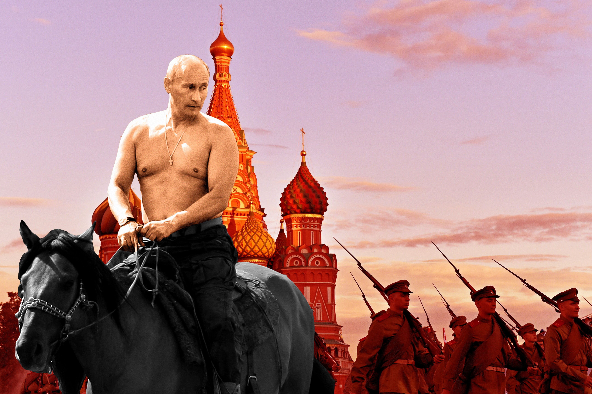
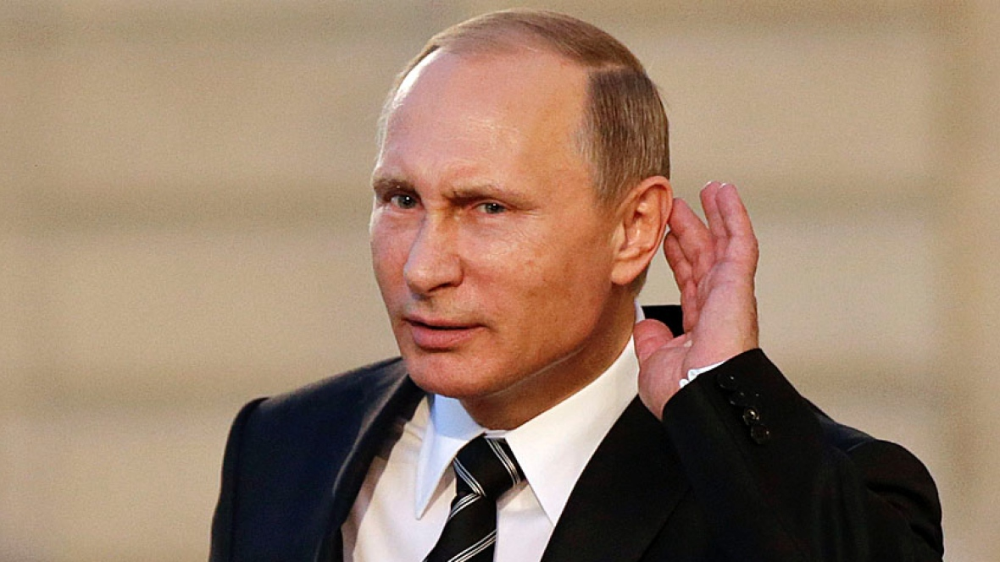

Tro d4rk a la gr
kan tu par a la gr avk t tchoin

Hihihi
kan tu vwa lé perdan => ¯\_(ツ)_/¯

Allo ?
Gentend pa lé rajeu

ciao
Allez bisous
Vladimir Vladimirovitch Poutine (en russe : Влади́мир Влади́мирович Пу́тин né le 7 octobre 19521 à Léningrad, est un homme d'État russe, président du gouvernement de 1999 à 2000 et de 2008 à 2012, et président de la Fédération de Russie, par intérim de 1999 à 2000, puis en titre de 2000 à 2008 et depuis 2012.
Membre du KGB, principal service de renseignement de l'URSS post-stalinienne, il commence sa carrière politique à la mairie de Saint-Pétersbourg, puis devient l'un des plus proches conseillers du président Boris Eltsine, qui fera de lui le directeur du Service fédéral de sécurité en 1998, puis le président du gouvernement de la Russie l'année suivante.
À partir du 31 décembre 1999, à la suite de la démission d'Eltsine, il assure les fonctions de président de la Fédération de Russie par intérim. Il devient président de plein exercice le 7 mai 2000, après avoir remporté l'élection présidentielle dès le premier tour, dans des conditions polémiques. Confortablement réélu en 2004, il mène une grande politique de réformes marquée par un redressement de l'économie nationale et une politique institutionnelle tournée vers une concentration des pouvoirs présidentiels.
En 2008, la Constitution lui interdisant de concourir pour un troisième mandat consécutif, il soutient la candidature de Dmitri Medvedev à la présidence. Une fois élu, celui-ci le nomme président du gouvernement. Dans la foulée, Vladimir Poutine prend la direction du parti Russie unie. Régulièrement critiqué en Occident pour l'aspect autoritaire de sa gouvernance, il est pour la première fois significativement contesté à la suite des élections législatives de 2011.
Il se porte candidat à l'élection présidentielle de 2012, bénéficiant à cette occasion du soutien du président sortant, Medvedev. Le 7 mai 2012, Vladimir Poutine retrouve la fonction de président de la Fédération de Russie après sa victoire au premier tour de scrutin, pour un mandat allongé de deux ans, courant jusqu'en 2018.
kan tu par a la gr avk t tchoin
kan tu vwa lé perdan => ¯\_(ツ)_/¯
Gentend pa lé rajeu
Allez bisous